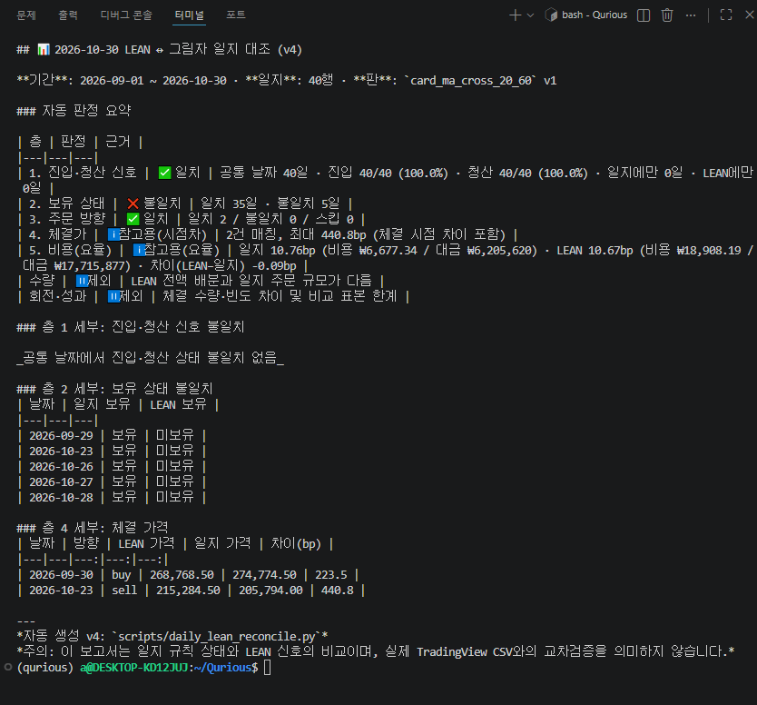
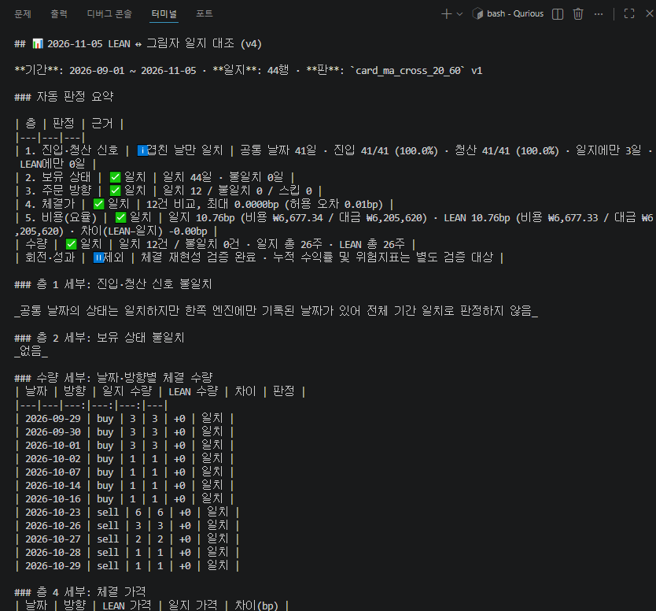
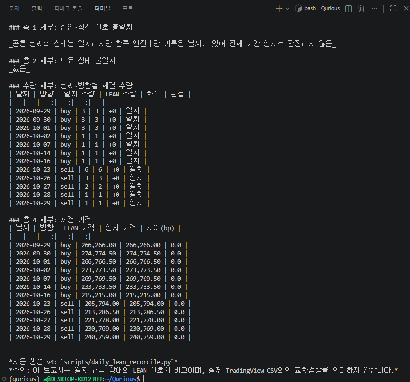

백테스트를 실행하는 데서 멈추지 않고,
결과가 맞는지 검증하다
기존 LEAN 백테스트 실행 체계를 활용해 Paper 모의투자와 실행 조건을 맞추고, 신호·보유·체결·거래비용·성과 계산이 일관되는지 검증했습니다.
최신 대사에서 보유 상태 전부 일치
주문 방향·수량·체결가격 일치
양쪽 총 거래비용 차이
QuantConnect LEAN은 알고리즘 트레이딩 실행 엔진입니다
퀀트 전략에 가격 데이터를 공급하고, 알고리즘을 실행하며, 주문·체결·포트폴리오·성과 통계를 관리하는 오픈소스 엔진입니다.
알고리즘의 실제 실행부입니다. 데이터 이벤트에 따라 전략을 구동하고 포지션, 주문, 체결, 통계를 관리합니다.
프로젝트 설정, 데이터 구성, 백테스트 실행을 터미널 명령으로 관리하는 도구입니다. CLI가 엔진 자체는 아닙니다.
엔진 실행 환경을 컨테이너로 분리합니다. 개발 PC와 팀 환경 간 의존성 차이를 줄여 재현 가능한 실행을 돕습니다.
이번 담당은 LEAN 신설이 아닌 실행 결과의 정합성 검증이었습니다
Qurious에는 LEAN 백테스트 화면과 실행 API가 이미 있었습니다. 기존 실행 경로를 활용해 조건을 맞추고, 성과 계산과 Paper 거래 기록을 신뢰할 수 있도록 보완·검증했습니다.
동일 데이터·기간·체결 조건을 고정해 기존 엔진에서 재실행
LEAN native와 pandas 출처 구분, Sharpe·MDD·DSR 계산 점검
신호·보유 상태부터 주문·체결 수량·가격·거래비용까지 비교
첫 대사에서 신호와 실제 보유 상태의 차이를 발견했습니다
대상: 삼성전자 005930.KS · MA Cross 20/60 · 2026.09.01~10.30 · LEAN Docker와 Paper Trading 그림자 일지
공통 40일 일치
공통 40일 일치
5일 불일치
비교 가능한 주문 방향 일치
| 불일치 날짜 | 그림자 일지 | LEAN |
|---|---|---|
| 09-29 | 보유 | 미보유 |
| 10-23 | 보유 | 미보유 |
| 10-26 | 보유 | 미보유 |
| 10-27 | 보유 | 미보유 |
| 10-28 | 보유 | 미보유 |
초기 대사 최대 체결가격 차이
요율은 근접했지만 거래 규모와 비용 구성이 달라 참고값으로만 처리
불일치 원인을 추적하고 실행 조건을 다시 맞췄습니다
하나의 신호 로직을 고치는 문제가 아니라, 자금 배분·가격 입력·체결 시점·주문 수량이 서로 다른 상태를 바로잡는 작업이었습니다.
초기 알고리즘은 포트폴리오 전액 배분을 시도했습니다. 반면 Paper Trading은 종목별 주문 예산과 매수·매도 비율을 적용했습니다. 신호가 같아도 주문 승인 결과가 달라질 수 있었습니다.
청산 주문과 보유 상태 전이, 일별 스냅샷 시점을 거래 이벤트와 맞춰 확인해야 했습니다. 단순히 신호 일치만으로 설명할 수 없었습니다.
- 대사 전용 LEAN 테스트 알고리즘에서 전액 배분 대신 30% 비중으로 실행하도록 조정.
- 대사 전용 `next_open` 체결 모드로 주문일과 체결일을 분리.
- 대사 모드 데이터는 Collector DB를 사용하고, 누락 시 다른 데이터로 조용히 대체하지 않도록 구분.
- 신호는 수정종가, 수량·장부 평가는 원주가 종가, 체결은 다음 거래일 원주가 시가로 역할 분리.
- 매수 예산·매수 비율·매도 비율과 실제 체결 수량을 별도 대조.
최종 재실행에서 보유·주문·체결이 일치했습니다
2026.09.01~11.05 · 일지 44행 · LEAN 체결 12건 · `daily_lean_reconcile.py` v4
| 검증 항목 | 최초 대사 | 11.06 재대사 | 판정 |
|---|---|---|---|
| 보유 상태 | 35 / 40 | 44 / 44 | 일치 |
| 진입·청산 신호 | 40 / 40 | 41 / 41 (공통일) | 3일 커버리지 차이 |
| 주문 방향 | 2 / 2 | 12 / 12 | 일치 |
| 체결 수량 | 비교 제외 | 12 / 12 · 총 26주 | 일치 |
| 체결 가격 | 최대 440.8bp | 최대 0.0000bp | 일치 |
| 비용 요율 | 10.76 vs 10.67bp | 10.76 vs 10.76bp | 일치 |
44일 보유 상태 일치
12건 최대 가격 차이
매수·매도 체결 수량 합계
12건의 체결을 거래별 막대 그래프로 비교했습니다
날짜별 Paper와 LEAN의 체결 수량을 나란히 표시했습니다. 막대 높이가 같고, 12건 모두 체결가격 차이는 0bp였습니다.
체결 이벤트 일치
최대 체결가격 차이
매수·매도 양방향 합계
앞의 숫자는 터미널에 찍힌 원본 출력입니다
`daily_lean_reconcile.py` v4 · 최초 대사와 재대사의 판정 요약, 그리고 12건 체결의 수량·가격 세부



체결가 차이는 슬리피지가 아니라 시점 정의부터 달랐습니다
초기 LEAN은 Yahoo Finance 일봉 커스텀 데이터에 15:29 시각을 부여했습니다. 이 값은 실제 종가 체결을 보장하지 않았습니다.
일봉 해상도의 시장가 주문은 LEAN 엔진의 시간 규칙에 따라 Market-on-Close 또는 Market-on-Open으로 변환될 수 있었습니다. 15:29 타임스탬프를 실제 종가 체결로 해석하면 안 됐습니다.
초기 대사 최대 체결가 차이
기존 화면 기본값은 유지하고, 대사 실행에서만 Collector DB와 `next_open` 선택 모드를 사용해 신호일과 체결일을 분리했습니다.
최종 12건 최대 체결가 차이
수수료는 요율뿐 아니라 비용 총액과 거래대금까지 비교했습니다
요율이 같아도 거래금액이 다르면 실제 비용은 다릅니다. 기존의 요율 중심 판정을 총액·분모·요율의 3요소 비교로 보완했습니다.
수수료·세금 등 비용 총액의 일치 여부
비용 요율을 계산하는 동일 기준 금액
거래대금 대비 비용 비율을 별도 비교
| 최종 대사 | 그림자 일지 | LEAN | 차이 |
|---|---|---|---|
| 총 거래대금 | ₩6,205,620 | ₩6,205,620 | ₩0 |
| 총비용 | ₩6,677.34 | ₩6,677.33 | ₩0.01 |
| 비용 요율 | 10.76bp | 10.76bp | 약 0.00bp |
성과 수치가 다르면 산출 경로와 정의부터 확인했습니다
하나의 백테스트 결과에 API 보조 계산값과 LEAN 엔진 자체 통계가 함께 존재하면, 두 값을 섞어 하나의 성과처럼 표시할 수 없습니다.
| 2026.11.04 실행 예시 | 전략 API 계산 | LEAN native statistics |
|---|---|---|
| 순수익률 | -6.99% | -6.821% |
| MDD / Drawdown | -7.69% | 7.400% (낙폭 크기) |
| Sharpe Ratio | -3.37 | -2.922 |
| 거래 수 | 2건 | 2건 |
초기 자본 대비 최종 평가액 및 비용 반영 시점 확인
일별 평가액 기준인지 거래 청산 기준인지 구분
관측 주기와 완료 거래 집계 기준을 명시
DSR 입력값의 Sharpe 관측 단위를 바로잡았습니다
연율화 Sharpe를 관측 주기 기준으로 계산하는 DSR에 그대로 전달하면 단위가 섞입니다. 수식 자체보다 먼저 입력 기준을 맞춰야 했습니다.
연율화된 값과 관측 주기 단위의 값이 혼합되면 표준오차와 검정 결과 해석이 왜곡될 수 있습니다.
일간 수익률 기준으로 연율 Sharpe를 √252로 나눠 일 단위 Sharpe로 변환한 뒤 DSR 계산에 전달합니다.
우연한 양의 성과가 높은 DSR로 통과하는 거짓 양성 문제를 재현하는 TC-QFRS 검증을 추가했습니다.
가격의 값뿐 아니라 출처·시각·단위를 관리했습니다
주문에 쓰는 현재가와 전략 판단에 쓰는 저장 가격은 목적이 다릅니다. 오래된 값이나 다른 가격 단위가 조용히 섞이지 않도록 경로를 정리했습니다.
`source`, `as_of`, `fetched_at`, `fallback`을 함께 관리하고 체결 직전 조회 규칙을 `confirm_for_order`로 모았습니다.
현재 조회 실패와 환율의 실제 기준 시점을 분리해 오래된 환율을 최신 값처럼 표시하지 않도록 했습니다.
분할·권리락이 끼면 수정주가로 계산한 ATR 손절거리와 증권사 원가격 체결 단위가 달라질 수 있습니다. 변환 원칙과 사례를 정리했으며, 전체 실전 주문 경로의 ATR 통합 완료와는 구분합니다.
개선의 목표는 검증 가능한 실행 결과를 만드는 것이었습니다
백테스트부터 기록·대사·성과 산출까지, 실패를 성공처럼 보이게 하지 않고 문제를 찾을 수 있도록 보완했습니다.
- Paper Snapshot 일부 종목 실패 및 DB 오류를 Celery 실패로 전달하는 테스트 보완.
- HF 원장 pull 오류가 stderr뿐 아니라 stdout에 있어도 진단 내용이 노출되도록 보완.
- 신호 비교 데이터가 없으면 일치가 아니라 `unavailable`로 판정.
- 일지에만 있는 신호 3일의 전체 기간 커버리지 원인 확인.
- TradingView 원본 CSV 기반 직접 비교는 비용 제약으로 미완료.
- 5일 단독 백테스트 요구의 별도 증빙 및 성과지표의 완전한 동일 기준 비교.
- ATR 단위 변환의 전체 실행 경로 통합과 DSR 후속 고도화.
- LEAN을 실계좌 주문·자동매매 엔진으로 전환하거나 운영 승인하는 작업은 이번 범위가 아님.
“기능이 실행되는가?”에서
“그 결과를 신뢰할 수 있는가?”로 검증의 기준을 확장했습니다.
전략 신호, 자금 배분, 체결 시점, 거래비용, 가격 출처, 성과 통계를 분리해 확인하고, 일치하지 않는 부분은 원인을 추적해 수정했습니다.